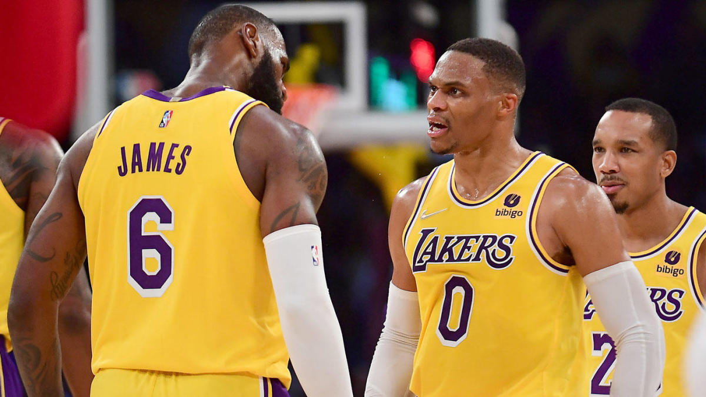

Lebron Jame's Career
One of the Most Talented Careers in the History of Basketball
LeBron has played 19 years and counting in his career. As an NBA Finals MVP, he is the only one who has obtained NBA championships with three NBA teams (the Cleveland Cavaliers, the Miami Heat, and the Los Angeles Lakers). James has played in up to 10 NBA Finals.
- 2003–04: Rookie season
-
LeBron James became a member of the Cleveland Cavaliers as the first team of the 2003 NBA draft. In the first NBA regular season, James scored 25 PTS against the Sacramento Kings. He then set an NBA record for most PTS that a prep-to-pro basketball player could score in the debut performance.
- 2011–13: Consecutive NBA championships
-
James revealed that in the 2011-12 NBA season, he got a contract to join professional football from the Dallas Cowboys and the Seattle Seahawks to refresh his mind and body.
In Game 5 of the 2011-12 NBA playoffs, Lebron James gained a triple-double as Miami Heat did defeat Oklahoma City for their second NBA championship.
Lebron James then became the Bill Russell NBA Finals Most Valuable Player as he averaged 28.6 PTS, 10.2 REB, and 7.4 AST per game. His whole postseason run, where he had averages of 30.3 PTS, 9.7 REB, and 5.6 AST per game, ranked the second greatest performance in NBA history.
In the 2012–2013 season, James scored 29.7 PTS and 7.8 AST per game. During that time, the Miami Heat also built up a 27-game streak that is the 3rd longest in modern NBA history.
Following these achievements, Sports Illustrated illustrated Lebron James’s performance as a “month for the ages”. In the NBA Finals, he averaged 26.8 PTS, 8 REB, 7.3 AST, and 1.7 STL per game on 56.5 shooting percent.
Particularly, in Game 7, Lebron James led the Miami Heat over San Antonio with 37 PTS. He then became Finals MVP for the second NBA season with averages of 25.3 PTS, 10.9 REB, 7 AST, and 2.3 STL per game for the NBA championship round.
- 2014-2018: Return To The Cleveland Cavaliers
-
On June 25, 2014, Lebron James opted out of the contract with the Miami Heat. On July 1, he then again became a free agent. On July 11, Lebron James revealed through an essay in Sports Illustrated that he aimed at returning to the Cleveland Cavaliers.
- 2018-Current: Los Angles Lakers
-
From 2018, till now Lebron James has stayed on the same team, there is a whole other link that will talk about currernt Lebron James.

Lebron's Stats Over the Years